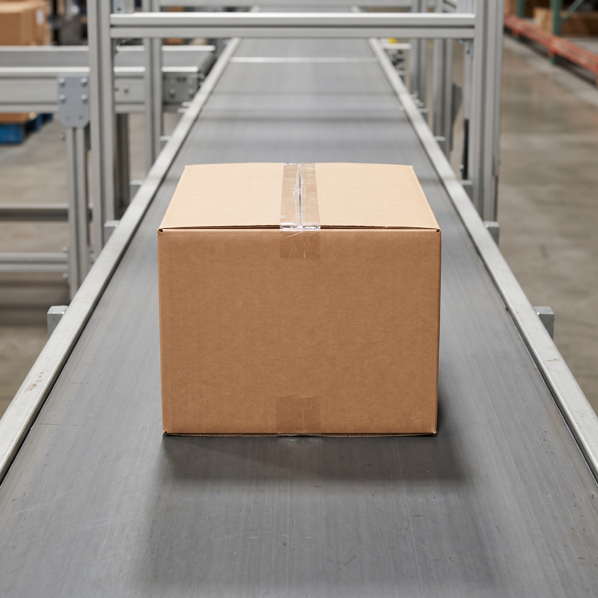
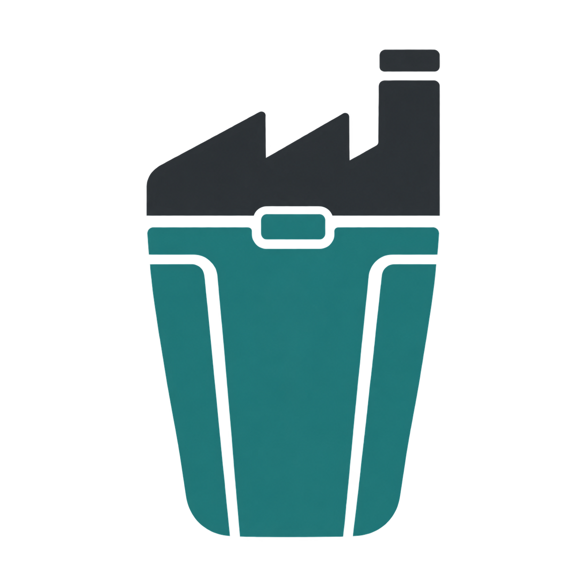

공장 생산 선택한 기준 시각까지 처리가 완료된 오늘 생산 기록의 수량 합계입니다. 계획은 하루 생산 목표입니다.
생산 100개· 목표 120개
계획 대비 83.3%
목표 초과
생산 기록 보기
시간별 기록 조회 중
시간별 기록이 없습니다.
오늘 시간별 완료 수량 · 좌우로 이동해 확인하세요.

텀블공장 관제 대시보드요청한 주소의 화면이 없어 오늘 운영으로 이동했습니다.
생산·출고 실적과 운영 상태를 살펴봅니다.
우선 확인할 문제가 없습니다.
운영 담당자 · 기록 갱신 상태를 계속 확인해 주세요.
생산 100개· 목표 120개
계획 대비 83.3%
목표 초과
생산 기록 보기
시간별 기록 조회 중
시간별 기록이 없습니다.
오늘 시간별 완료 수량 · 좌우로 이동해 확인하세요.
출고 75개· 목표 100개
계획 대비 75.0%
목표 초과
출고 기록 보기시간별 기록 조회 중
시간별 기록이 없습니다.
오늘 시간별 완료 수량 · 좌우로 이동해 확인하세요.
공장·창고의 마지막 기록 시각과 서비스별 상시 운영 상태를 확인합니다.
기록이 반영되고 있습니다.
오늘 생산 기록 보기기록이 반영되고 있습니다.
오늘 출고 기록 보기알림 전송이 완료됐습니다.
현장 기록의 발생·서버 접수·서버 처리 시각을 확인합니다.
기록이 반영되고 있습니다.
기록이 반영되고 있습니다.
이 탭에서 대시보드가 서버에 요청한 기록입니다. 공장·창고는 같은 요청으로 조회합니다.
조회 기록이 없습니다.